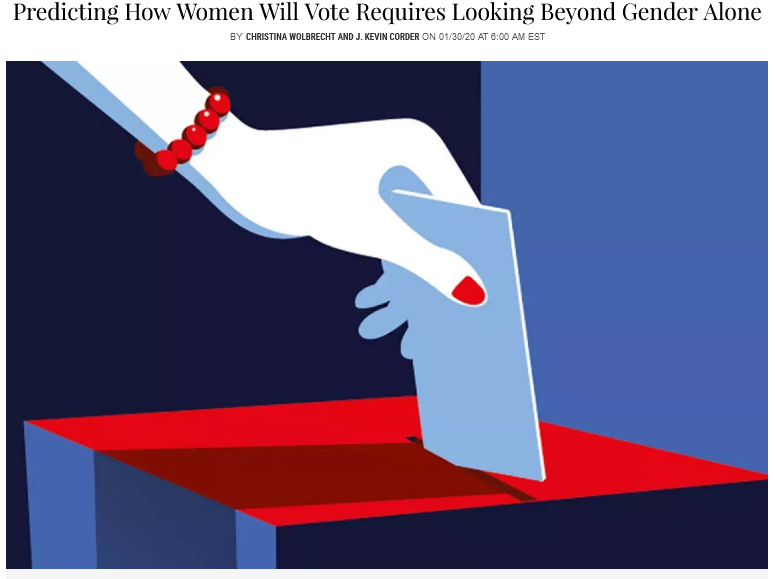

Christina Wolbrecht and I adapted some text from our new book for a piece in NEWSWEEK. Click here to read the essay.
Christina Wolbrecht and I describe some of the political and public policy implications of the extension of the franchise to women - posted on Mischiefs of Faction. Click here to read the essay.
It takes more than a formal rule change to incorporate new groups into the active electorate. Christina Wolbrecht and I outline how this unfolded for women in the 1920s in a short piece published by the American Bar Association in Insights on Law and Society. Click here to check out the essay.
Check out a short summary of my work with Christina Wolbrecht on women’s voting in the 1920s and 1930s (Washington Post, August 26, 2016). Reposted August 26, 2017